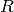
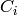
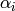
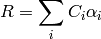
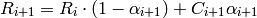
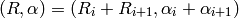
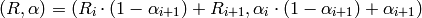
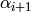
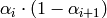
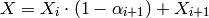

Elements of Moviemaker2¶
Functions¶
Most of the stuff passed around in moviemaker2 is callable.
E.g., you can hand over as a position:
x=p('time/relative')
p is a class whose instances retrieve objects from a parameter object (class Ps). In this case, it returns the 'time/relative' parameter. When the algorithm needs the value of x, it will call the x variable (the object it holds) with a parameter object.
p is a subclass of moviemaker2.math.primitive.MathFunction, and can be used to compose functions using:
- Sum
- Difference
- Product
- Quotient
- Power
- Negative
- Cosine, Sine, including the calls of numpy.cos and numpy.sin on Functions
- Calls of numpy.sum() on Functions
- Indexing
- Attribute access (via moviemaker2.math.primitive.AttributeAccess).
Moviemaker2 functions usually act on parameter objects. The more general Functions or MathFunction, which belong to the Function framework included in moviemaker2, are not really moviemaker2 specific, and hence accept any kind of arguments. A Function’s __call__ method might look like:
def __call__(self, *args, **kwargs):
# Evaluate the argument functions ...
argument1 = self.argument1(*args, **kwargs)
argument2 = self.argument2(*args, **kwargs)
...
# Do something with the values ...
...
Composed Functions¶
Using Functions, one can write Functions, whose variables in the algorithms depend entirely on other Functions. In the above example, the x variable of the point position is evaluated at call time, when the frame is rendered. Until then, the x is just a Function, its value is undetermined.
Using composed functions, one is equipped with some kind of symbolic algebra system, a simple kind of course, and one can write things like:
x=Cos(p('time/realtime'))
Here, the p object will be called with the arguments given to the Cos object. Note that Cos is not a Python function, but a Function class. Meaning calling Cos does instantiate the class Cos with the initialisation argument p('time/realtime'). This is fundamentally different from evaluating the ordinary numpy.cos() Python function on some numeric value.
Composed Functions hand over the arguments of itself to the leaf functions. They take positional and keyword arguments, but they might be agnostic of the argument names, types, etc. They leave interpretation of arguments to the Functions they are composed of.
Parameter Objects¶
Parameter objects (class Ps) store all the parameters a renderer need for rendering a frame or a part of a frame.
Time is such a parameter, but it is not a special one at all. The only speciality of some time parameters (namely 'time/real' and 'time/frame') is that they are set by a special extension to moviemaker2, moviemaker2.ext.render.Render.
Parameters use the group/value scheme, and it might be, that in future this is also represented by an object hierarchy in the Ps instance. Atm, it is solely a convetion, and the names are just keys to a dictionary.
As an example for how parameters interact, some moviemaker2 extension “motionblur” might set a parameter, blur/1, and calls some renderer with the extended Ps object. Then this object might apply the blur/1 onto time/real by subtraction, and thus the parameter becomes effective in rendering.
Extensions¶
Extensions (with a capital E, lowercase extensions are extensions of functionality to moviemaker2), are instances of moviemaker2.extension.Extension. They conduct some operation on the parameter object handed over (on call time). Example:
extended = Extension(target=basic, value=(p('time/real') - 1.5),
p=p('time/relative'))
This retrieves the value from (p('time/real') - 1.5), i.e., the output additional value will be relative to 1.5 seconds realtime. It stores it using the parameter p, in this case, it stores it in the parameter 'time/relative', overwriting any previous storage there. The output is stored in a copy of the original parameter object handed over on call time, and thus does not pollute the upper call layers, but only affects the target renderer.
Branchers¶
Branchers are used
- To reduce computation overhead in case not all renders yield or must yield output at any call time
- To produce change of effects
Example:
brancher = Branch(fns={True: useful, False: bogus},
choice=GreaterEqual(p('time/real'), 0.0))
This will return the call of bogus any time the brancher is called with time/real < 0.
In this case choice returns a boolean value, which is used as index to fns. You might use also integer or anything else what is hashable as index to the fns object.
Rasterisers¶
Rasterisers are Functions that generate rasterised masks. Rasterisers are usually composed of one or multiple p’s.
Rasterisers are not intended to render complete pictures. They do not supply multiple channel data. Rasterisers should only supply masks, which can be used in any way, e.g. Rasterisers that generate R, G, B and alpha channels.
Vectorisers¶
Vectorisers are Functions that generate vectorised shapes. This vector shapes are instances of a separate class and contain a number of Polygons. Vectorisers do not encode vector data for being output to a file.
Vectorisers might be used for yielding lines, polygons, polyeders, etc., using
Meshes¶
Meshes are just a bundle of coordinate tuples. To facilitate numpy operations on them, they’re numpy ndarrays. In moviemaker2, the coordinate index is the last index of the mesh ndarray:
- Subtraction and addition of vectors works natively via braodcasting.
- Indicing the coordinate index happens via a[..., dimension], with dimension being the dimension of the host space targeted. This convention has to be followed in order to allow for arbitrary mesh shapes. There might be arbitrary many indices of the mesh not being the host space dimension index, but indexing the tuple of different points in the mesh.
Transforms¶
Transforms transform meshes into meshes.
Example: The Centre Transform subtracts a vector Function from the mesh Function given.
Transform often have the default parameter mesh=None, giving the ability to leave the mesh initialisation argument alone, and passing the mesh directly to __call__. This works because None is interpreted by asfunction as the identity Function. point data and p’s.
Layers and Stacks¶
Layers are not a distinct class in moviemaker2, but still they are one of the most prominent feature. Every Function can be a layer. The only prerequisite is that its return value complies with the constraints imposed by the Stack. Stacks are those object accumulating layers, and they are distinct classes. One can make objects of Stacks, and apply layers to them:
stack = moviemaker2.AdditiveRasterStack(background=<something>)
stack ^ layer1 ^ layer2
Stack is a subcloss of MathFunctions. Thus Stacks are callable, returning the accumulated (or: combined) result of all the stacks present in them. There is no restriction on how many stacks a layer might be attributed to, and layers can be removed from stacks after they have been added.
Layers might be combined (built-in):
- By addition (AdditiveRasterStack)
- By alpha blending (AlphaBlendRasterStack)
There is of course room for writing your own favouring combination method, just subclassing from moviemaker2.stacks.stack.Stack.
The interpretation of the alpha channel depends on the blitting method. For the addition method, it is used as an ordinary channel; for alpha blending, it acts as opaqueness.
One can alter the resolution of the result frames by just feeding in another size specification.
Special Combination Methods¶
Result and Alpha Channel¶
Layers might be generated from:
- A value channel (R, G, B, whatever).
- An alpha channel. The interpretation of the alpha channel depends on the blend mode.
The alpha channel is useful, because it affects all value channels simultaneously, separating colour mass from nominal colour. Nevertheless, it is likely possible that several (value, alpha) combinations yield the same result (ambiguity).
Alpha channels as well as colour channels are [0, 1] valued, but can exceed this range if it is useful. At least, 0 means “nothing”, and 1 means “full”.
Combination of Layers¶
The formulas are ( is the blended result,  are the colour values of the layers, and  are the alpha channels of the layers):
For addition:

For alpha blending:

Modification of layer yields is done:
For addition:

The result values and the opacity add up. You can imagine this like adding drops of glowing colour onto a glass plate.
For alpha blending:

For explaining this formalas, consider the semi-transparent pixel as boolean transparent with a fully opaque and a fully transparent section. This is fully equivalent to the semi-transparent full pixel.
Explanation for the alpha channel: Watching the layer stack from above, the opacity is  at least from the top layer, and through the tranparent section of the pixel, the opacity of the rest of the stack is visible: .
Explanation for the result channel: This is working by:
- The first layer has some defined background (e.g., black).
- Each next layer covers a section of each pixel by its opaque section.
The formulas for R and
 have a common structure: They
combine some quantity X for layer i and layer i + 1 by:
have a common structure: They
combine some quantity X for layer i and layer i + 1 by:
It follows that both R and
band are combined the same
way controlled by the band.